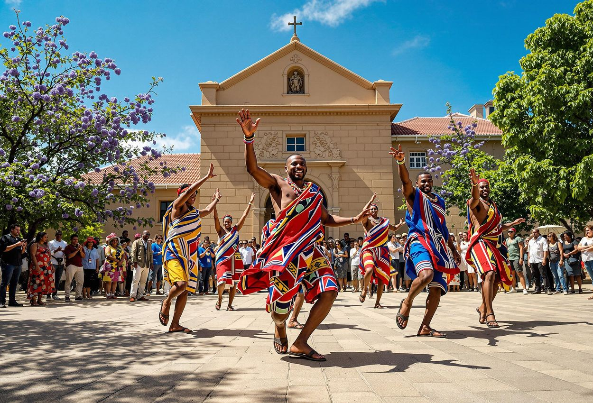
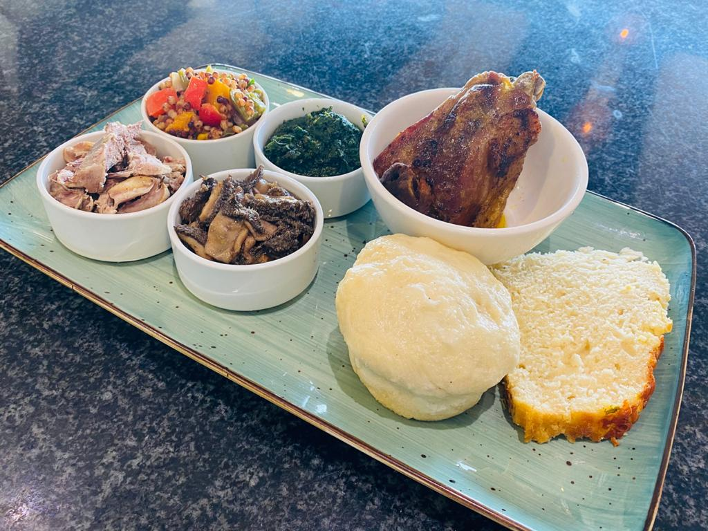

DESIGNED BY KENEOUE THOBOLOKOANE
The Morija Cultural Festival is one of the most celebrated tourism events in Lesotho, attracting visitors from across the world. It showcases the rich traditions, music, art, and heritage of the Basotho people in a vibrant and engaging atmosphere. Tourists get to experience authentic cultural performances, local crafts, and traditional cuisine. The festival is held annually in the historic town of Morija.
This exciting event provides a unique opportunity for both local and international tourists to immerse themselves in Lesotho’s culture. Visitors can enjoy live music, poetry, storytelling, and exhibitions from talented artists. The festival also promotes cultural exchange and tourism development within the region. It is a must-visit event for anyone interested in African heritage and cultural diversity.
Date: 5 - 7 October 2026
Location: Morija, Lesotho

